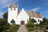
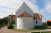
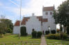
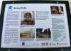
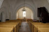
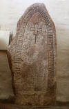
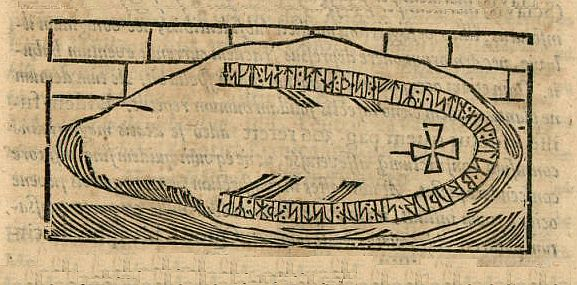
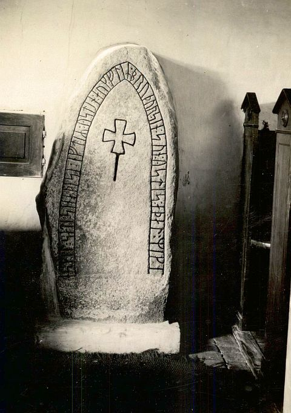

Alsted
Grauer Granit mit rotem Korn und glatter Oberfläche
Höhe ü. d. Fußboden: 140 cm
Größte Breite: 75 cm
Größte Dicke: 35 cm
Runenhöhe: 9 cm
Runeninschrift :
Eskil setzte diesen Stein zum Andenken an Østen und seinen Bruder Flit. Østens Sohn, Adelmærke.

Alsted
Listennummer : DR 237 / DK Sj 59
Navidaten: 55.40444 11.66460 oder: Alstedvej 30, 4173 Fjenneslev
Der Runenstein steht schon so lange man sich erinnern kann innerhalb der Kirche von Alsted. Bevor er an seinen heutigen Platz kam, war er auch schon im Waffenhaus und an anderer Stelle sichtbar eingemauert gewesen.
Die Inschrift ist innerhalb eines spitzbogigen Runenbandes wiedergegeben, das an den äußeren Rändern des Steines angelegt wurde. Dominiert wird der Stein von einem christlichen Kreuzzeichen (Kreuz 16 x 17 cm - Höhe insgesamt 32 cm).
Die Inschrift wird in den Zeitraum 1000 - 1050 datiert. Die Kirche wurde wohl um 1150 erbaut und liegt 52 m über dem Meeresspiegel. Die Kalkmalereien in der Apsis (Foto siehe unten) wurden 1892 aufgedeckt und stammen wohl aus dem 12. Jahrhundert.
Bei meinem letzten Besuch in Alsted am 31.08.2016 war die Kirche leider geschlossen. Aber der freundliche Nachbar gegenüber erklärte mir auf Nachfrage, wo ein Schlüsselträger - ich glaube es war der Pfarrer - wohnt. Den besuchte ich wenige Meter entfernt und er erklärte sich auch sofort bereit mit dem Schlüssel zur Kirche zu kommen. Deshalb war es mir dann "Gott sei Dank" doch noch möglich den Runenstein und die Kirche zu fotografieren.
     


Die Informationen zu diesem Runenstein aus der dänischen Runendatenbank kann man im Internet hier abrufen.
Von dem Altertumsforscher und Begründer der Runologie Ole Worm (1588-1654) war 1622 die Initiative für einen königlichen Brief an alle dänischen und norwegischen Bischöfe ausgegangen, die darin aufgefordert wurden die bekannten Altertümer in ihrem Bereich an das Reichsarchiv nach Kopenhagen zu melden. Durch den damaligen Herrscher über Dänemark und Norwegen, König Christian IV. (König von 1588 bis 1648) wurde dieses Ansinnen in die Tat umgesetzt. Über die eingehenden Rückmeldungen wurde er auf diesen Runenstein aufmerksam. Von Ole Worm wurde er höchstpersönlich untersucht und ein Holzstich angefertigt. Da war er in einer Wand des Waffenhauses eingemauert. Der Stich ist in seinem großen Werk "Danicorum Monumentorum libre sex", 1643, abgebildet (S.131 - dort als "Alstedense" betitelt):

Screenshot aus: http://docnum.u-strasbg.fr/cdm/ref/collection/coll6/id/979
Durch königliches Dekret vom 09.02. sollte im Jahre 1652 eigentlich die Überführung des Runensteins nach Kopenhagen erfolgen. Dies wurde aber hier, wie auch andernorts im Reich, einfach ignoriert.
Im Jahre 1756 hat Søren Abildgaard (Archivzeichner, 1718-91) diese Zeichnung des Runensteins angefertigt (Der Digitalen Sammlung des Nationalmuseums Kopenhagen entnommen):

Lizenz: CC-BY-SA
Der handschriftliche Text von Abildgaard auf der Zeichnung besagt, dass der Stein damals so an einer Wand, teilweise im Fußboden, des Waffenhauses eingemauert war und von daher nur der wiedergegebene Teil der Inschrift sichtbar war. Diese Zeichnung hat eine Größe im Original von 11 x 19 cm.
Text: "Alsteds Kirkes monumenta (Überschrift). Denne Rune-Steen er indmuret i Alsted Kirkes Vaabenhus, saaledes at dens nederste Kant gaar ned i Gulvet og Grunden, som er lagt med Muur-Stenen. Den blev aftegnet A(nn)o 1756. ved S.A.".
Im Vorfeld zu dem 2016 erschienenen Buch von Lisbeth M. Imer "Danmarks Runesten - en fortælling" reiste die Runologin des Nationalmuseums Kopenhagen mit dem Fotografen Roberto Fortuna zur Bestandsaufnahme durch die Lande. Hier er mit seiner mitgeführten professionellen Beleuchtung ein tolles Foto geschossen!

Lizenz: CC-BY-SA 3.0
Es gibt noch weitere Zeichnungen / Abbildungen dieses Runensteins, so z.B. durch J. Kornerup von 1857 im antiquarisch-topografischen Archiv im Nationalmuseum in Kopenhagen. Die Zeichnung von Magnus Petersen in Ludv. F. A. Wimmers monumentalem Werk "De danske Runemindesmærker" von 1899-1901, Band II, S. 473, habe ich aus der in meinem Besitz befindlichen Ausgabe abfotografiert:

Der digitalen Sammlung des Nationalmuseums Kopenhagen kann man mehrere Fotografien des dänischen Runologen Erik Moltke aus den 1930er Jahren entnehmen - Lizenz: CC-BY-SA - dies hier beispielhaft:

Im Internet finden sich über die Homepage der dänischen Runendatenbank hier alle Infos zu diesem Runenstein.
Der entsprechende Eintrag zu dem Runenstein in "Fund og Fortidsminder" ist hier verlinkt.